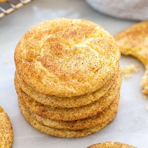

Grandma Ruth's Snickerdoodle Cookies
This is my great-grandma's recipe that everyone loves! (Source)

Decription
When removing cookies from the oven, they make look doughy still. By allowing them to continue to cook on the cookie sheet out of the oven prevents hard cookies.
For storing cookies, place cooled cookies in a plastic container or plastic bag with a piece or two of bread to keep cookies soft.
Ingredients
Cookies
- 1 ½ cups white sugar
- 1 cup softened butter
- 2 eggs
- 2 ¾ cups all-purpose flour
- 2 teaspoons cream of tartar
- 1 teaspoon baking soda
- ¼ teaspoon salt
Coating
- 2 tablespoons white sugar
- 2 teaspoons ground cinnamon
Steps
- Preheat oven to 400 degrees F (200 degrees C). Line a baking sheet with parchment paper or lightly grease.
- Beat 1 1/2 cups white sugar, butter, and eggs together in a bowl using an electric mixer until smooth and creamy. Combine flour, cream of tartar, baking soda, and salt in a separate bowl; stir into creamed butter mixture until dough holds together.
- Mix 2 tablespoons white sugar and cinnamon together in a bowl.
- Form dough into 2-teaspoon-size balls and roll in the cinnamon-sugar mixture. Place dough balls, about 2 inches apart, on the prepared baking sheet.
- Bake in the preheated oven on the center rack for 7 minutes. Allow cookies to cool on the baking sheet for 5 minutes before transferring to a wire rack.
Nutrition Facts
Per Serving: 120 calories; protein 1.4g; carbohydrates 16.5g; fat 5.5g; cholesterol 23.9mg; sodium 91.6mg.
Return to Main Page